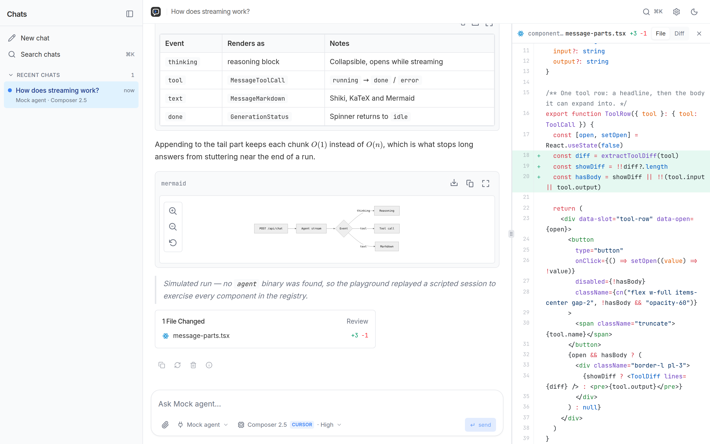
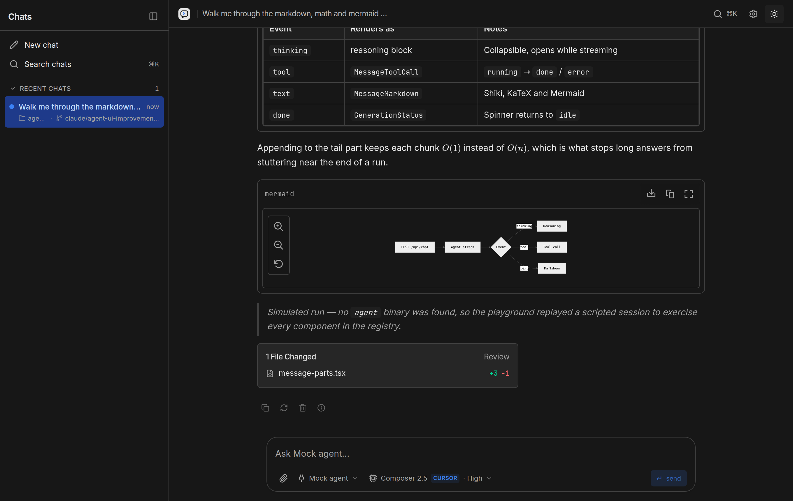
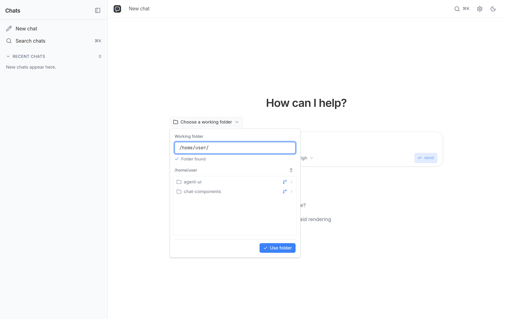
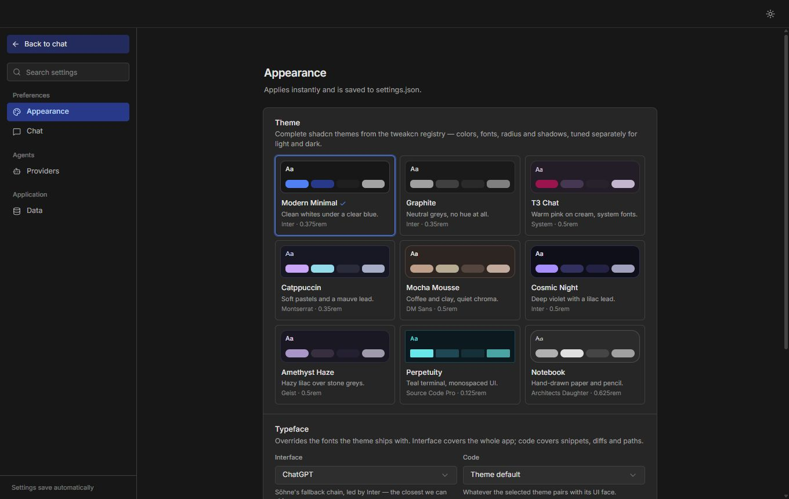

M
Model
The intelligence you choose — local or hosted.
Local-first agent workspace
Run Cursor Agent, DeepSeek Harness, pi, Ollama, and any ACP agent from one fast desktop. Keep the folders, files, permissions, and context under your control.

The idea
Great models still need a place to work. Agent UI adds the durable layer around them: projects, conversations, permissions, files, diffs, and a clear view of what is happening.
The intelligence you choose — local or hosted.
The tools, planning loop, and execution runtime.
The interface that makes agent work legible and manageable.
Why Agent UI
Stop relearning a different interface for every agent. Agent UI normalizes the parts you use every day without flattening what makes each harness useful.
01 — See the work
Reasoning, status, tool calls, markdown, artifacts, and file changes stream into one coherent timeline. Long runs feel alive instead of frozen, and the result stays reviewable after they end.

01
Streaming updates are batched, message rows stay stable, and heavy views load when you need them. The desktop shell boots the local app before showing the window, without a white flash.
02
Your chats and settings live in local JSON. Use local models, hosted APIs, or both.
03
Choose read-only, edits, or full access per session whenever the harness supports it.
04
Give each chat a working folder. Sessions are grouped by checkout and branch, so parallel work stays organized without pretending your filesystem does not exist.

02 — Stay oriented
Chats follow the projects they belong to. Pin the important ones, search everything with ⌘ K, and keep two agents working in two checkouts without mixing their context.
03 — Bring your agent
Pick a harness, then pick its model source. Agent UI keeps those choices separate, so a new model does not require a new desktop — and an ACP-compatible agent needs configuration, not a fork.
Full agentic runs in the folder you choose, backed by the local Cursor CLI.
DeepSeek's tool-rich harness, integrated over its ACP profile with sandbox controls.
A small agent harness that gives local and hosted models room to reason and act.
Direct chat with local models, including thinking support and honest cold-start status.
Connect OpenAI-compatible endpoints from ten presets or add your own base URL.
Add a command, arguments, workspace, and permission policy. No application code required.
04 — Make it yours
Configure harness paths, model providers, defaults, memory, sound, and themes once. Agent UI checks availability at runtime and tells you what needs attention.

Small details, serious workspace
The app says it is loading — and names it — instead of pretending it is thinking.
The latest plan stays above the composer, with progress visible at a glance.
Status appears in the conversation and the sidebar, so background work never looks dead.
Completion sound, file summary, and diff review put the result back in your hands.
Open source · local first · built for agents
Windows x64 · signed automatic updates